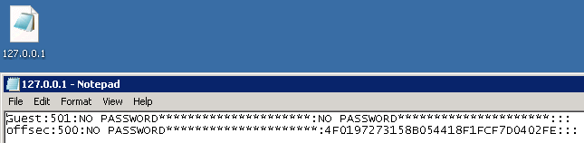

14.1.5 - Exercises
1. Use fgdump on your Windows system.

2. Use WCE on your Windows system.

14.2.3 - Exercises
1. Conduct targeted password attacks on systems within your target network range.
2. Identify the protocols that run well. Which do not?
3. Ensure that you don't lock out any accounts.
14.3.6 - Exercises
1. Use the different tools covered in this module to conduct password attacks against various services in the lab.
2. Use Metasploit to exploit one of the SMB servers in the labs. Dump the password hashes and attempt a pass-the-hash attack against another system